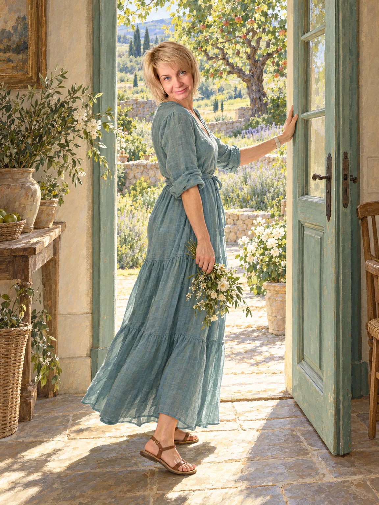
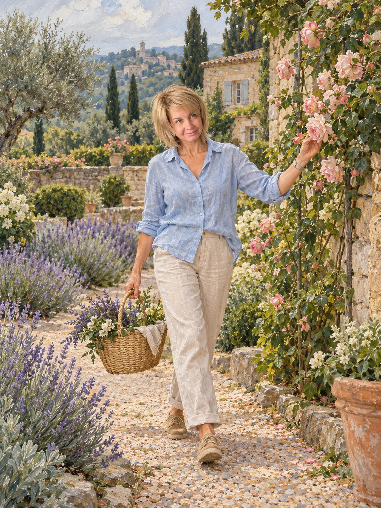
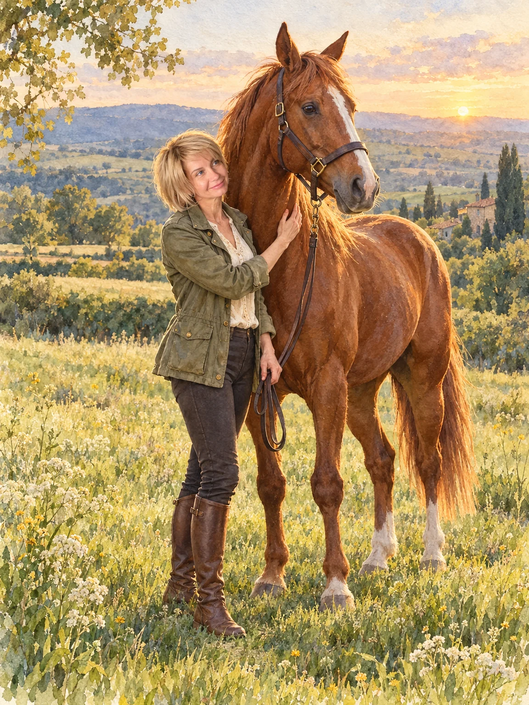
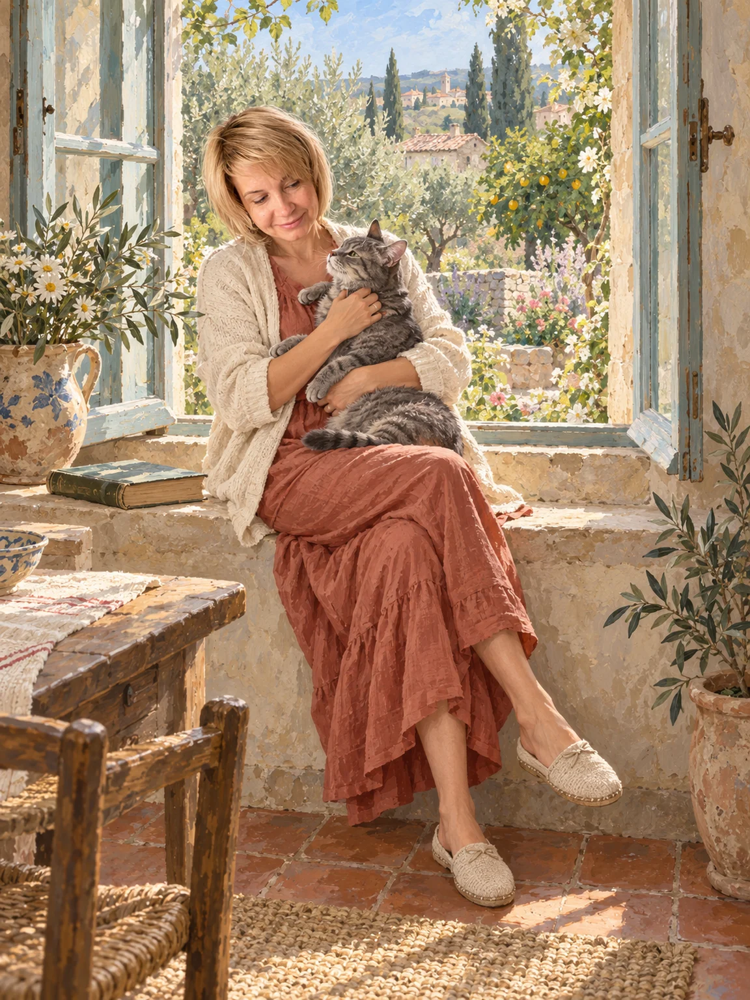
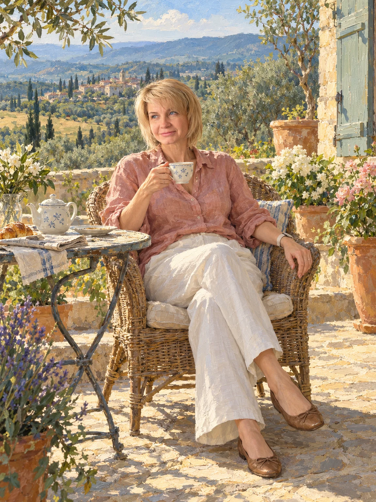
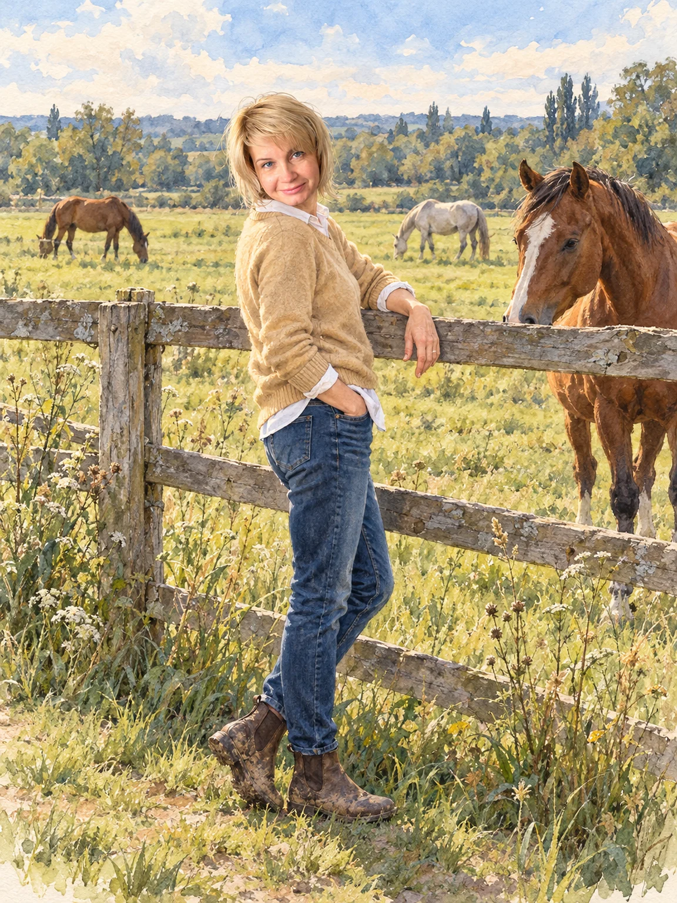
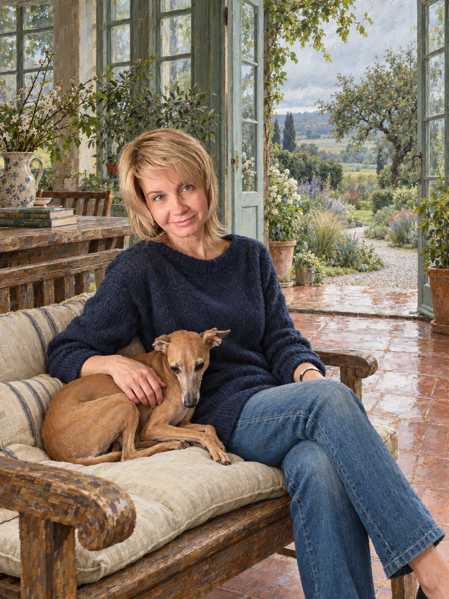
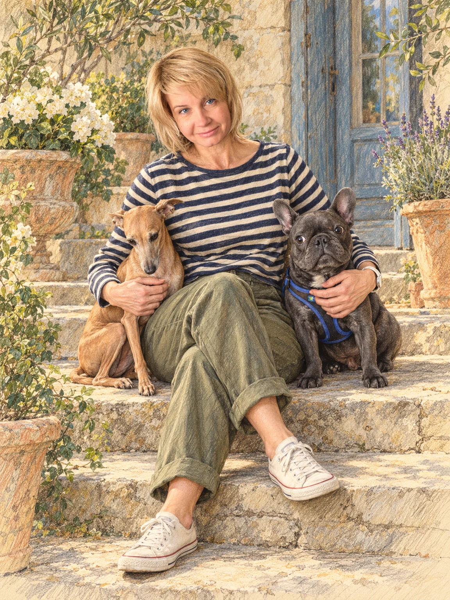
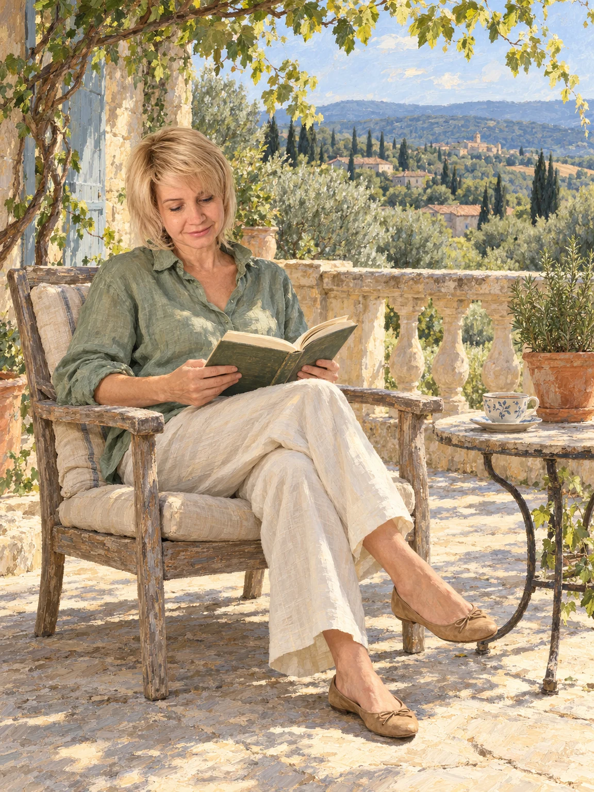

Содержание
Выбери интересующую тему. Каждый раздел можно открыть отдельно.
Твои сильные стороны
Три образа звучат в твоей матрице громче остальных: Влюблённые, Сила и Императрица. Вместе они рисуют человека, который умеет выбирать своё, быть рядом и создавать красоту.
Важно не уходить в одну сферу и не оставлять без внимания себя.
Что видно в твоей матрице целиком
Влюблённые встречаются дважды. Это образ выбора и близких связей: с людьми, делом, местами и всем живым. В твоей жизни это, скорее всего, одна из самых заметных тем.
Сила в родовой линии — спокойная уверенность, которая ведёт без давления. Императрица в центре матрицы говорит про красоту, заботу и умение создавать вокруг себя хорошее. Луна добавляет интуицию и чуткость.
Итог матрицы — Повешенный, образ паузы и нового взгляда на привычное.

Императрица — красота и созидание
В матрице Императрица — это чувство красоты, терпение и умение растить то, что приносит радость. Тебе, вероятно, близок красивый ландшафт: места, где всё продумано и живёт своей жизнью.
Такое умение видеть результат на годы вперёд — настоящий талант.
Сильные стороны
- Чувство пропорции и красоты.
- Терпение и внимание к деталям.
- Умение видеть результат на годы вперёд.
Важно: красота не обязана быть идеальной. Иногда лучшее в ней — живое и немного неровное.

Сила — мягкая уверенность
Сила в матрице — это не напор, а внутренняя опора. Она про умение оставаться спокойной рядом с тем, что больше и сильнее: с ясностью, доверием и ровным голосом.
Что помогает
- Спокойствие в напряжённых ситуациях.
- Доверие и ясность вместо давления.
- Паузы, в которые можно выдохнуть.
Важно: мягкая сила не означает терпеть всё. Спокойно сказать «нет» — тоже её проявление.

Луна — интуиция и чуткость
Луна — это интуиция, чуткость и богатый внутренний мир. Такая энергия хорошо чувствует настроение людей и всего живого вокруг.
Сильные стороны
- Чуткость и внимание к настроению.
- Богатое воображение.
- Умение создавать ощущение безопасности рядом с собой.
Важно: у Луны есть и обратная сторона — тревожность и додумывание. Спокойные паузы обычно помогают ей отпустить.

Влюблённые — выбор и связь
Влюблённые стоят в матрице дважды. Это образ выбора по сердцу и тёплых связей с людьми, делом и местами. Тебе, вероятно, важно быть там, где откликается.
Что помогает
- Честность с собой в выборе.
- Умение быть рядом.
- Верность тому, что действительно важно.
Важно: не искать подтверждения выбора у других. Свой выбор достаточно сделать.

Иерофант — опыт и наставничество
Иерофант — это образ знаний, традиций и передачи опыта. Он говорит про умение объяснять просто и быть опорой для тех, кто только начинает.
Сильные стороны
- Накопленный опыт и спокойная уверенность.
- Умение объяснять просто.
- Уважение к традициям и проверенным способам.
Важно: опыт — это опора, а не рамка. Новое можно пробовать, не отказываясь от проверенного.

Что поддерживает баланс
Красота и покой
Красота рядом растёт там, где есть спокойствие. Оно важнее идеальности.
Забота о других и о себе
Можно окружать близких теплом, не забывая про свои желания и своё время.
Мягкость и ясность
Спокойная сила — это возможность ясно говорить, чего хочешь, без давления.

Текущий этап: после 55 лет
Матрица делит жизнь на периоды, и у каждого из них своя тема. Сейчас у тебя звучат Влюблённые — образ выбора и близких связей. Впереди Смерть: в Таро это образ обновления, когда освобождается место для нового. Это не про конец.
Это хорошее время для того, что приносит радость: красивые места, поездки, время для себя. Необязательно менять жизнь радикально — достаточно дать больше места тому, что наполняет.

Практические рекомендации
Для себя
Заранее выделять время для занятий, которые радуют.
Для красоты
Чаще бывать в красивых местах: на природе, в саду, у воды.
Для радости
Выбирать то, что откликается, не дожидаясь подходящего момента.
Для близких
Находить время для тех, рядом с кем спокойно.
Для равновесия
Выбрать один-два ориентира и дать им время.

Красота рядом растёт там, где ты спокойна.
Спокойная сила — это тоже способ двигаться вперёд.
↑ К содержанию